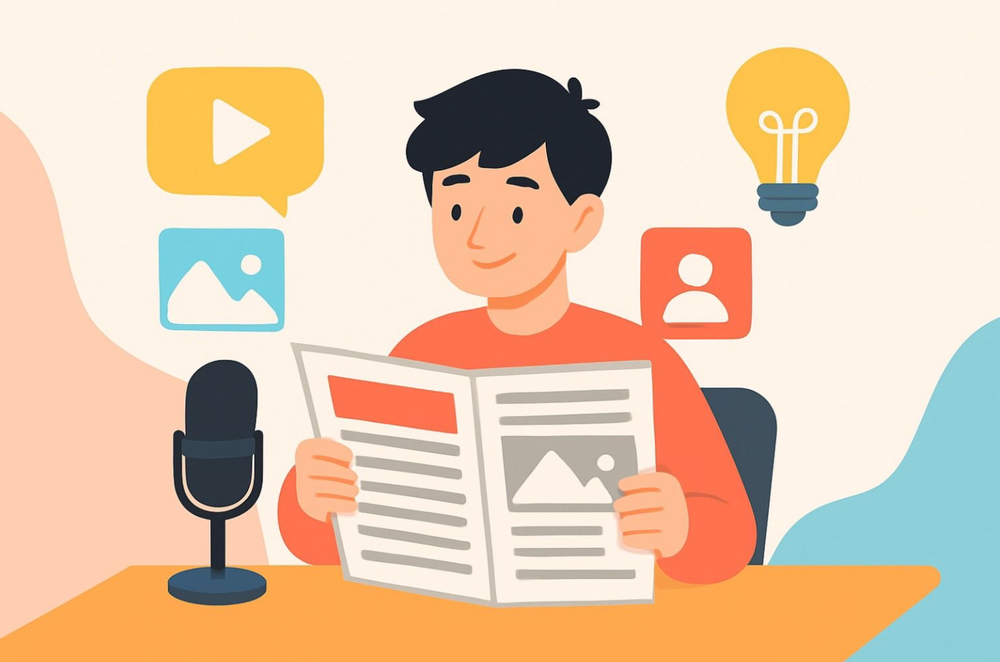
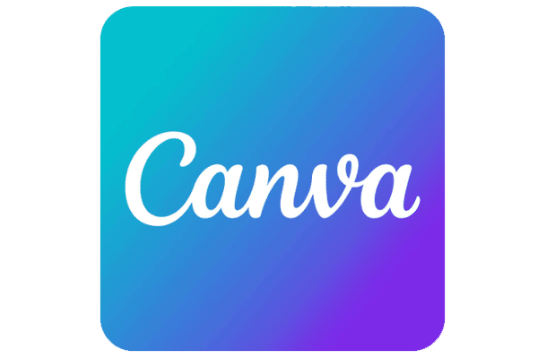
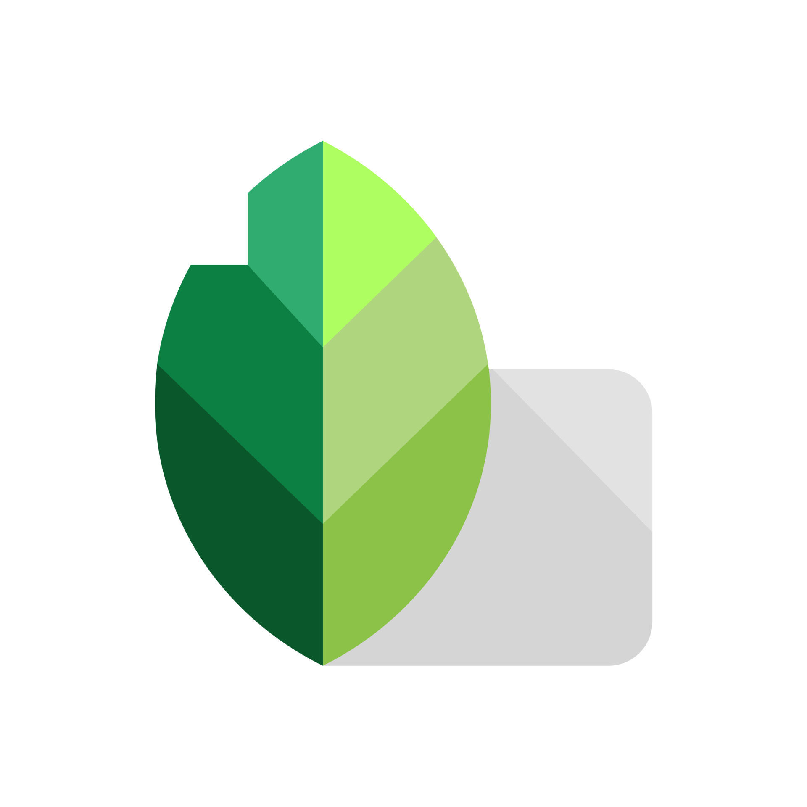
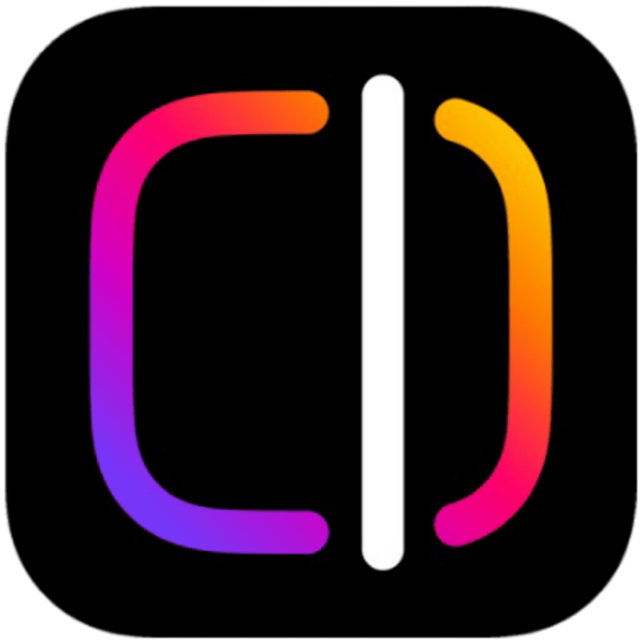

كل ما تحتاج معرفته عن الإخراج الصحفي

يمثل الإخراج الصحفي ترتيب المحتوى الإعلامي وتنسيقه بطريقة منظمة وواضحة. يشمل ذلك العناوين، الصور، والألوان، بحيث يسهل على القارئ متابعة المعلومات وفهمها بسرعة، كما يجذب انتباهه. في هذا القسم، سنستعرض أساسيات الإخراج الصحفي التي تساعد في تقديم مادة إعلامية متكاملة ومرتبة.
العناوين
أهمية العناوين
تستطيع أن تسيطر على القارئ وتجذبه بشدة، وتساعد في ترتيب أهمية المادة الإخبارية.
العناوين من حيث الاتساع والشكل
العنوان العريض (المانشيت):
هو الذي يمتد باتساع الصفحة بالكامل من بداية العمود الأول حتى العمود الأخير في الصفحة الأولى.
الهدف: إبراز موضوع رئيسي.
العنوان الممتد:
هو العنوان الذي يمتد عبر عمودين أو أكثر.
العنوان العمودي:
لا يزيد عن عمود واحد.
العنوان النصف عمودي:
هو عنوان لا يزيد عن سطر ويتم وضعه على نصف عمود.
العناوين من حيث الشكل
العنوان المفرود:
يشغل العنوان الاتساع كله ويتكون من سطر واحد أو عدة سطور.
العنوان الهرمي:
يتكون من سطرين أو أكثر، يضيق كل سطر عن السطر السابق.
العنوان المتركز:
يتوسط السطر بحيث يكون الفراغ على يمينه مساوياً للفراغ على يساره.
العنوان المجرد:
هو العنوان الذي لا يمتد على الأعمدة التي يشغلها الخبر.
العنوان الجانبي:
يتم وضعه بجانب القصة الإخبارية.
أساليب التنويع في شكل العناوين
- أرضية العنوان
- استخدام الحروف المائلة
- العناوين المضغوطة
- العنوان المصاحب بظل والمفرغ
أنواع العناوين
العنوان الرئيسي:
من أبرز العناوين وأكثرها دلالة على الخبر، ويتقدم على العناوين الأخرى.
العنوان الثانوي:
هو سطر أو بضعة أسطر تلحق بالعنوان الرئيسي وتحتوي على تفاصيل أكثر للخبر.
قد يتبع العنوان الرئيسي أكثر من عنوان ثانوي واحد.
العنوان الثابت:
يستخدم للدلالة على محتوى صفحة كاملة، ويظهر بشكل دوري في الصحيفة.
عنوان الفقرة:
يستخدم للاسترشاد بما تحتويه الفقرة من أهم المعلومات.
العنوان التمهيدي:
هو سطر يوضع عادة فوق العنوان الرئيسي، ويختلف حجمه عن العنوان الرئيسي سواء كان أصغر.
الصورة الصحفية
تُعد الصورة الصحفية عنصرًا بصريًا أساسيًا يعزز المحتوى الإعلامي، إذ تساعد على لفت انتباه القارئ بسرعة، وتسهّل عملية الفهم، وتزيد من قوة التأثير في عرض الأحداث والموضوعات.
خصائص الصورة الصحفية
- سرعة أكبر في لفت أنظار القراء.
- سرعة أعلى في الفهم وإمكانية التأثير.
وظائف الصورة الصحفية
- الوظيفة البصرية: تقديم مشهد واضح يجذب القارئ.
- الوظيفة الاتصالية: نقل المعلومات والرسائل بدقة.
- الوظيفة الجمالية: إضافة قيمة فنية للمحتوى.
أنواع الصور من حيث المعنى
- الصورة الخبرية: توثّق الحدث وتنقله كما وقع.
- صور الموضوعات: ترافق التحقيقات والتقارير التحليلية.
- صور الموضوعات ذات الطابع الإنساني: تبرز الجانب الإنساني في القصص والشكاوى.
- صور الشخصية المحورية: تُستخدم مع الأحاديث الصحفية لشخصيات محددة.
- الصور التعبيرية: تخلو غالبًا من الأشخاص وتركز على إيصال معنى معين.
- الصور الجمالية: تُختار لتزيين الصفحة دون هدف خبري.
الصور الصحفية من حيث الشكل الهندسي
- الشكل المربع للصورة.
- الشكل الدائري للصورة.
- الشكل المستطيل للصورة.
- الأشكال الهندسية غير التقليدية.
الألوان
إن الألوان تعطي الصحيفة قيمة جمالية وهذه القيمة تتحقق إذا أدى اللون الغرض اللذي يتناسب معه.
والمخرج الصحفي مطالب باختيار الألوان المناسبة والتنسيق فيما بينها.
وظائف اللون
- جذب الانتباه
- خلق تأثيرات سيكولوجية
- إضفاء مزيد من الواقعية
- ينمي ارتباطات معينة
- يساعد على التذكر
دلالات الألوان
اللون الأحمر: يدل على الحياة والمشاعر القوية. يجعلك تشعر بالنشاط والحماس أحيانًا، ويمكن أن يزيد سرعة تنفسك ودقات قلبك قليلاً عندما تشعر بالحماس أو الانفعال.
اللون الأصفر: وهو لون يحمل بطبيعته الإشراق واللمعان وهو لون مرح وصاف يشبه اللون الأبيض.
اللون البرتقالي: لون مرح مليء بالحيوية ويوحي بالدفء والسعادة.
اللون الأخضر: لون الطبيعة مهدئ وهو من أكثر الألوان المريحة للعين
تعرف على هذه البرامج لإنتاج المحتوى الإعلامي
هذه البرامج سهلة الاستخدام، وتساعدك على ابتكار محتوى إعلامي متنوع وممتع. والآن، يمكنك إنتاج عمل إعلامي كامل واحترافي مباشرة من هاتفك، ومشاركته مع الجميع بسهولة.
Canva
يستخدم للتصميم

Snapseed
يستخدم لتنقية وتحسين الصور

CapCut
يستخدم لإنشاء وتحرير الفيديوهات
Edits
يستخدم لتصوير الفيديو وتحريره مباشرة

Unfold
يستخدم لتصميم منشورات وقصص جذابة
(صورة التطبيق غير متوفرة)
المصدر: كتاب فن الإخراج الصحفي بين النظرية والتطبيق، د. فتحي إبراهيم إسماعيل